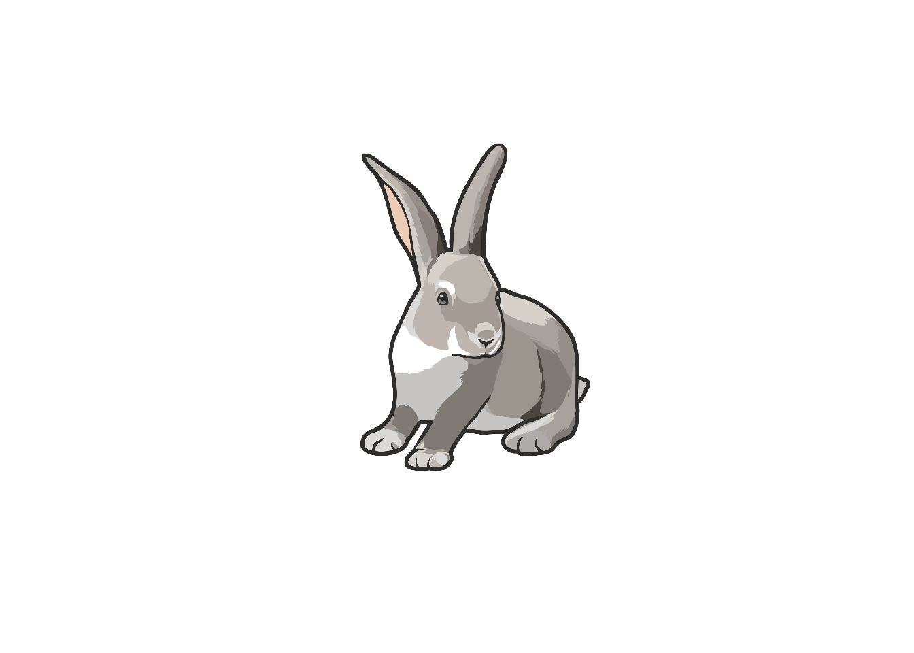
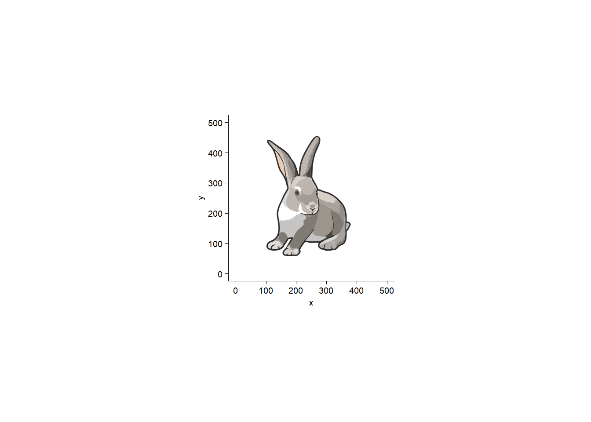

"images/" |>
fs::dir_tree(regexp = "^images/Rabbit0001\\.(png|svg)") images/
├── Rabbit0001.png
└── Rabbit0001.svgpng/svg/pdf images read by magick package, and the resultant format
R包magick用三个读取图片的函数，分别是image_read()、image_read_svg()、和image_read_pdf()。
因此测试下其将图片读取后的图片格式是什么。
从https://bioart.niaid.nih.gov/bioart/668下载png格式（位图图像）和svg格式（矢量图）。
"images/" |>
fs::dir_tree(regexp = "^images/Rabbit0001\\.(png|svg)") images/
├── Rabbit0001.png
└── Rabbit0001.svg图片用microsoft edge浏览器打开svg图片 → 打印为microsoft pdf。
"images/" |>
fs::dir_tree(regexp = "^images/rabbit") images/
└── rabbit0001.pdfmagick |> library()Linking to ImageMagick 6.9.13.29
Enabled features: cairo, freetype, fftw, ghostscript, heic, lcms, pango, raw, rsvg, webp
Disabled features: fontconfig, x11png <- "images/Rabbit0001.png" |>
magick::image_read()
png |> image_info() format width height colorspace matte filesize density
1 PNG 2084 2084 sRGB TRUE 205821 118x118png |> plot()
读取为png格式。
svg <- "images/Rabbit0001.svg" |>
magick::image_read_svg()
svg |> image_info() format width height colorspace matte filesize density
1 PNG 500 500 sRGB TRUE 0 72x72读取为png格式。
pdf <- "images/rabbit0001.pdf" |>
magick::image_read_pdf()
pdf |> image_info() format width height colorspace matte filesize density
1 PNG 2481 3508 sRGB TRUE 0 300x300读取为png格式。
image_read()读取svg和pdf# read svg
svg1 <- "images/Rabbit0001.svg" |>
magick::image_read()
svg1 |> image_info() format width height colorspace matte filesize density
1 SVG 500 500 sRGB TRUE 49183 96x96svg1 |> plot()读取为svg格式（image_read()无法读取pdf）。
image_read读取的svg是否可以嵌入tidyplots？tidyplots |> library()
# View image information
img_info <- svg1 |> magick::image_info()
img_width <- img_info$width; img_height <- img_info$height
# Change to graphical object
img_grob <- svg1 |> grid::rasterGrob()
# Create a data frame relevant to img_grob
df <- tibble::tibble(x = seq(0, img_width, length.out = 100),
y = seq(0, img_height, length.out = 100))
# The intended width of image
img_intend_width = 50 # unit: mm
# Tailor relative extra spaces of plot
top_extra = 0 # 0 (0%) - 1 (100%)
right_extra = 0; bottom_extra = 0; left_extra = 0
# The width and height of plot
plot_width = img_intend_width * (1 + left_extra + right_extra) # unit: mm
plot_height = img_intend_width * (img_height/img_width) * (1 + top_extra + bottom_extra)
# Plot
p1 <- df |> tidyplot(x = x, y = y) |>
add_data_points(alpha = 0) |>
add(ggplot2::annotation_custom(img_grob, xmin = 0, xmax = img_width,
ymin = img_height, ymax = 0))
p1
p1 |>
save_plot("images/Rabbit0001_tidyplot.pdf", view_plot = FALSE) |>
save_plot("images/Rabbit0001_tidyplot.png", view_plot = FALSE)✔ save_plot: saved to 'images/Rabbit0001_tidyplot.pdf'✔ save_plot: saved to 'images/Rabbit0001_tidyplot.png'